中国电子学会主办 ｜ 理论知识 + 实际操作 一站式复习 ｜ 适合四五年级同学
理论考试的"大头"，单选、判断题最爱考这些概念，先理解再记忆！
导体中的电流，跟电压成正比，跟电阻成反比。
| 对比项 | 串联电路 | 并联电路 |
|---|---|---|
| 回路 | 只有一条回路，无分支 | 有多条回路（支路） |
| 电流 | 处处相等 | 干路电流 = 各支路电流之和 |
| 电压 | 总电压 = 各用电器电压之和（分压） | 各支路电压相等 |
| 互相影响 | 一处断开，整个电路都断 | 一条支路断开，不影响其他支路 |
| 生活例子 | 节日小彩灯 | 家用电器（电灯、冰箱、电脑）都是并联 |
下列关于电的描述不正确的是（ ）
以下对并联电路的叙述错误的是（ ）
下列关于电阻叙述正确的是（ ）
认识这些"小零件"的脾气，电路题和实操题都少不了它们。
以下对 LED 的叙述错误的是（ ）
以下电路组成元素中，不属于必要元素的是（ ）
三级考试的核心主控板，理论 + 实操都围绕它出题。
电脑里每个字符都对应一个数字，这个数字就是 ASCII 码。只要记住三个"起点"，其他都能推出来 👇
| 字符 | ASCII 码 | 规律 |
|---|---|---|
| 0（数字零） | 48 | 数字的起点 |
| 1 ~ 9 | 49 ~ 57 | 在 48 的基础上依次 +1 |
| A（大写） | 65 | 大写字母的起点 |
| B ~ Z | 66 ~ 90 | 在 65 的基础上依次 +1 |
| a（小写）⭐ | 97 | 小写字母的起点，真题考过！ |
| b ~ z | 98 ~ 122 | 在 97 的基础上依次 +1 |
变量声明中将字符 a 赋值给整型变量 c，通过串口监视器打印 c，看到的可能是（ ）
利用光敏电阻传感器向 Arduino 模拟输入 A3 口发送信息，下列值可能是返回值的是（ ）
Arduino UNO 主控板采用 ATmega328P-PU 处理器，该处理器的主频为（ ）
机器人的"身体构造"，常和传感器、执行器一起考。
下列选项中，Arduino 控制板相当于机器人的（ ）
下列器件中，通常用做模拟输入的有（ ）
实操考 1 道大题：现场搭建电路 + 画流程图 + 编程实现功能，100 分这样分布 👇
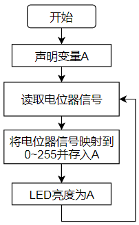
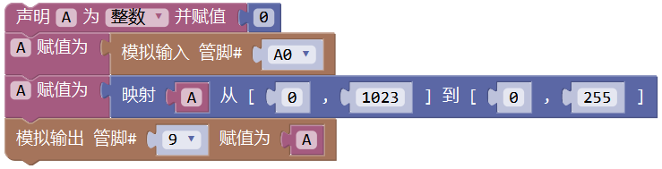
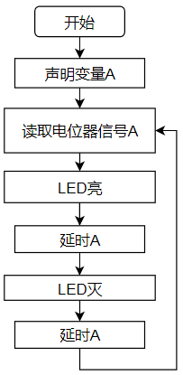
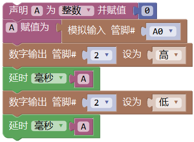
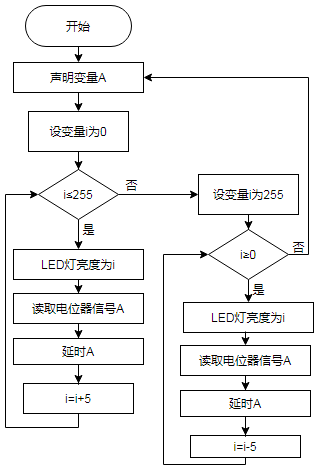
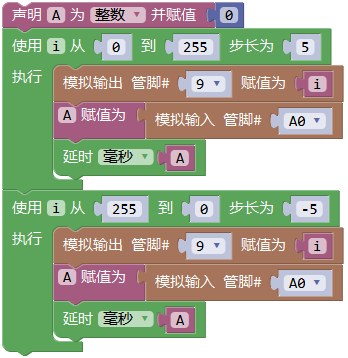
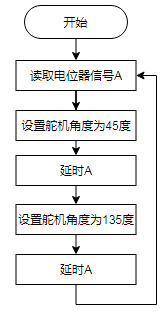
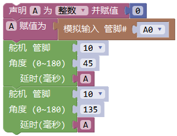
器件：Atmega328P 主控板、超声波传感器、LED 灯、蜂鸣器、红外接收套件。
任务：三种工作模式 —— 遥控器按 1＝关闭（LED 灭、蜂鸣器静音）；按 2＝短距离模式（反应距离 5cm）；按 3＝长距离模式（反应距离 10cm）。障碍物进入反应距离内时，LED 闪烁 + 蜂鸣器发声，且越靠近频率越快。
解题关键：用一个变量 mode 保存当前模式（0 / 5 / 10），红外按键切换 mode；超声波测距 dist 与 mode 比较；报警频率用"映射"实现——距离越近，延时越短、频率越高。
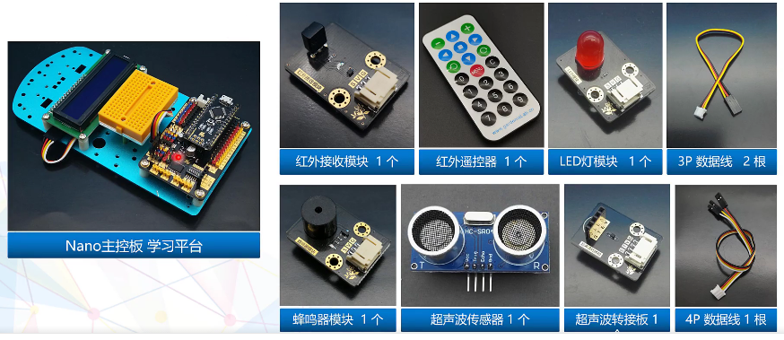
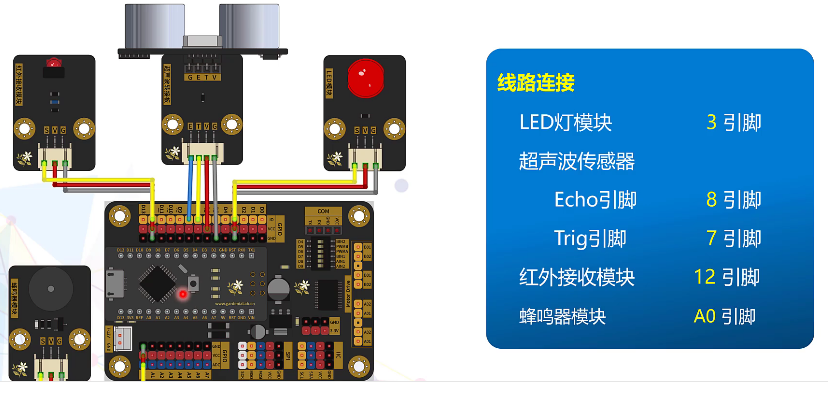
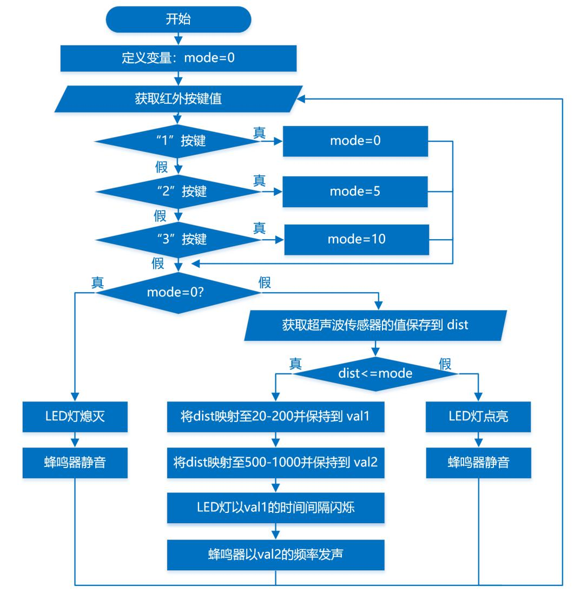
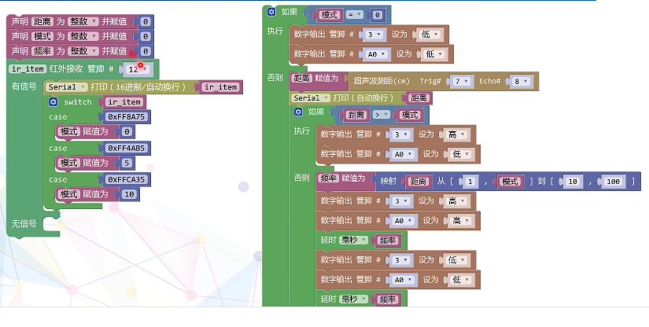
器件：LED 灯模块 2 个（LED_A、LED_B）、超声波传感器 1 个、舵机 1 个。
任务：超声波检测距离，控制舵机角度和 LED 亮灭，并把距离显示在串口监视器。距离 10cm 时舵机 90°、两灯均灭；距离 5cm 时舵机 0°、LED_A 闪烁、LED_B 熄灭；距离变化时舵机角度和灯光跟着渐变。
解题关键：先把距离约束在 5~15 之间，再映射到舵机 0~180°；LED 亮度用映射实现渐变，闪烁用"亮→延时→灭→延时"。
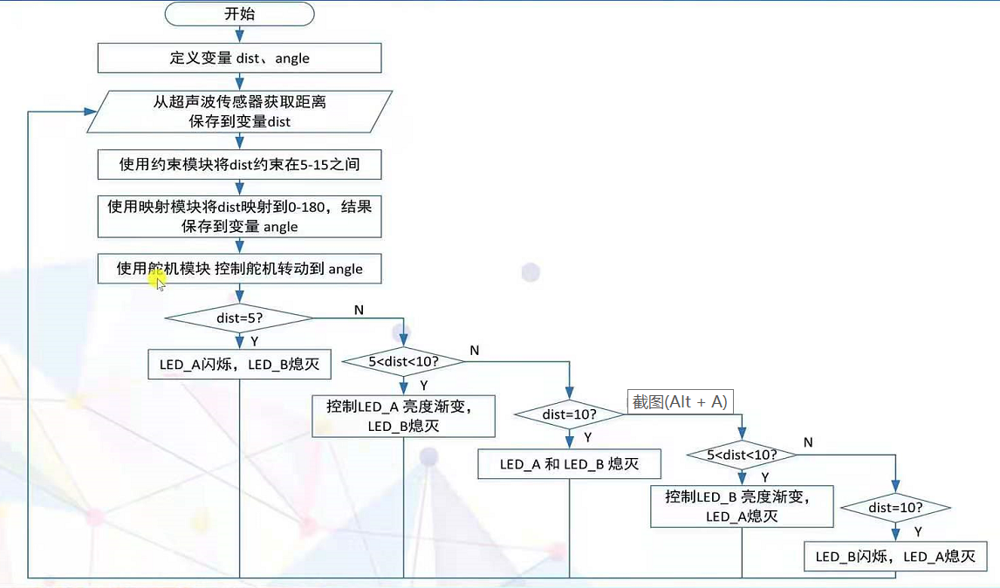
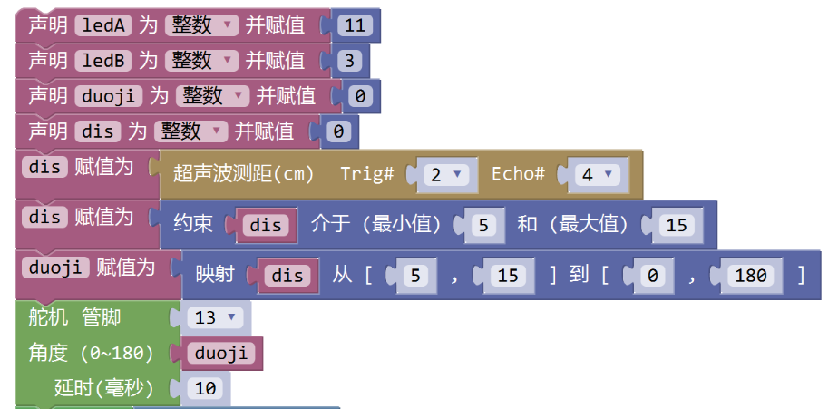
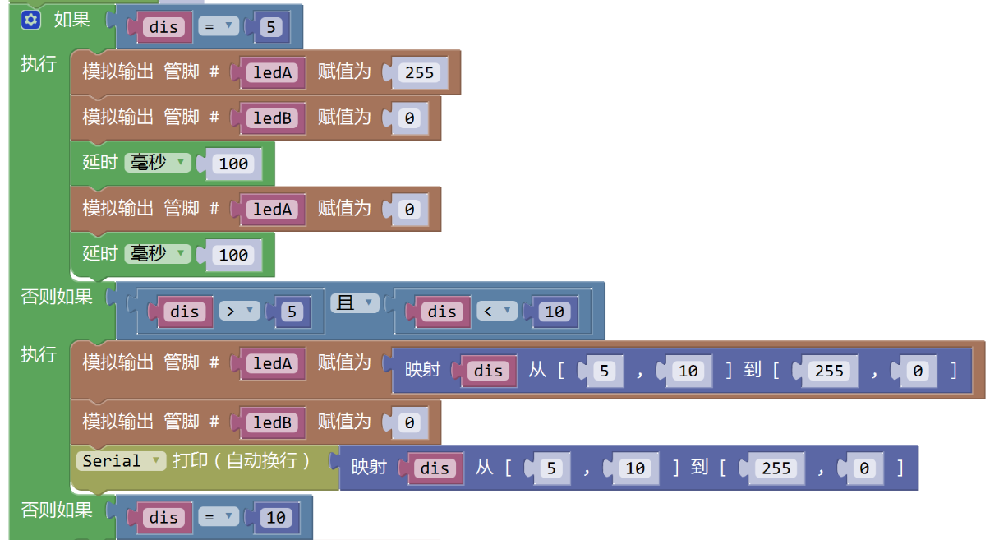
器件：LED 灯模块 3 个、超声波传感器 1 个。
任务：障碍物距离大于 30cm 时 3 盏灯全灭；距离逐渐接近时，3 盏 LED 灯依次点亮；远离时依次熄灭；距离值显示在串口监视器上。
解题关键：用"如果 / 否则如果"按距离分段（如 >30、20~30、10~20、0~10），每段点亮不同数量的灯。
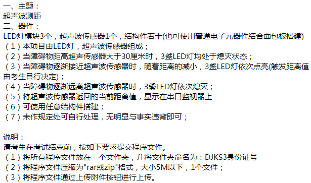
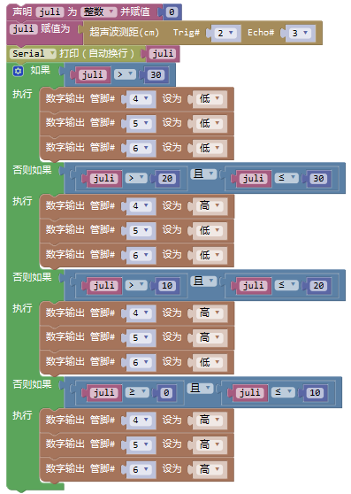
任务：按下按键后 LED 开始"呼吸"（渐亮再渐暗），电位器控制呼吸的快慢；松开按键，LED 熄灭。
解题关键：两个循环（i 从 0→255 渐亮、255→0 渐暗），循环里随时读取按键，松开就"跳出循环"；电位器的值映射到 10~100 作为延时时间。
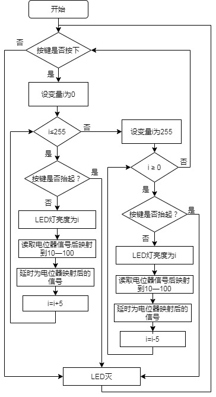
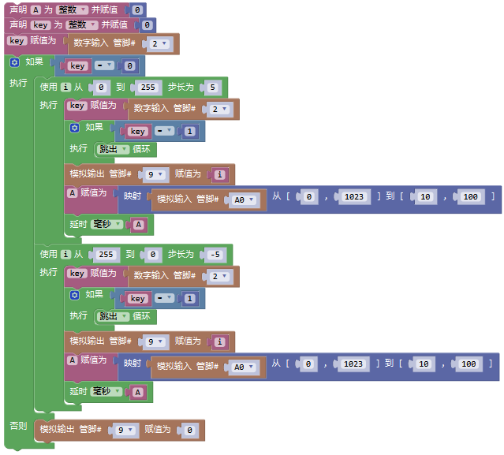
任务：两个按键（选手 1、选手 2）+ 红、黄两盏 LED + 蜂鸣器。开机蜂鸣器响 100 毫秒提示开始；谁先按下按键，对应的灯就亮；两人同时按下则都灭。
解题关键：两个按键值分别存进变量 key01、key02，用"逻辑与 &&"组合判断四种情况（都按 / 1 按 2 没按 / 1 没按 2 按）。
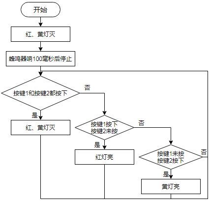
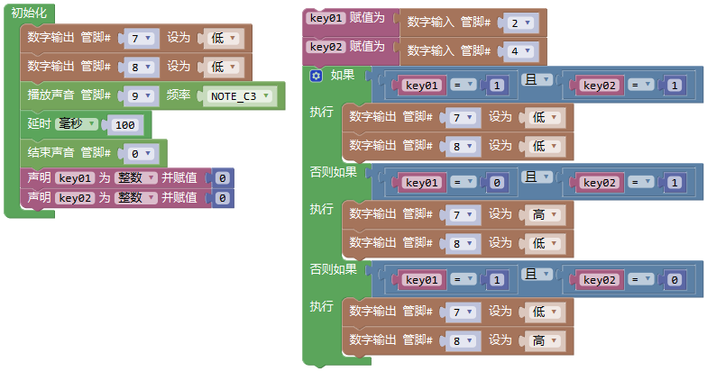
任务：旋转电位器，根据返回值分四档：<5 全部熄灭静音；5~300 黄灯亮；300~800 黄、绿灯亮；800~1023 黄、绿、红灯全亮，且蜂鸣器频率随电位器值变化。
解题关键：经典的"分段判断"题，用 如果 / 否则如果 把 0~1023 切成几段，每段设置不同的灯和声音。
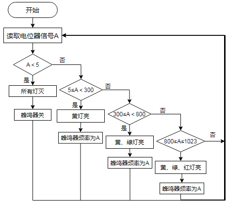
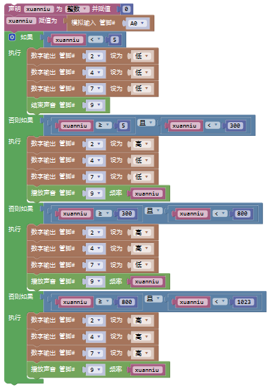
15 道真题高频考点，点选项立刻知道对错，看看你能拿多少分！